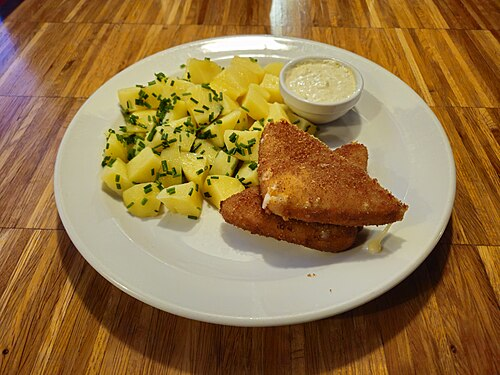

Smažený sýr

české a slovenské jídlo, které se připravuje smažením obaleného sýru typu eidam, gouda nebo ementál
Ingredience
- sýr
- vajíčko
- mouka
- rohlík
- sůl
Postup
- sýr obalit v mouce, potom ve vajíčku a potom v ostrouhaném rohlíku
- Osmažit na oleji
- A hotovo